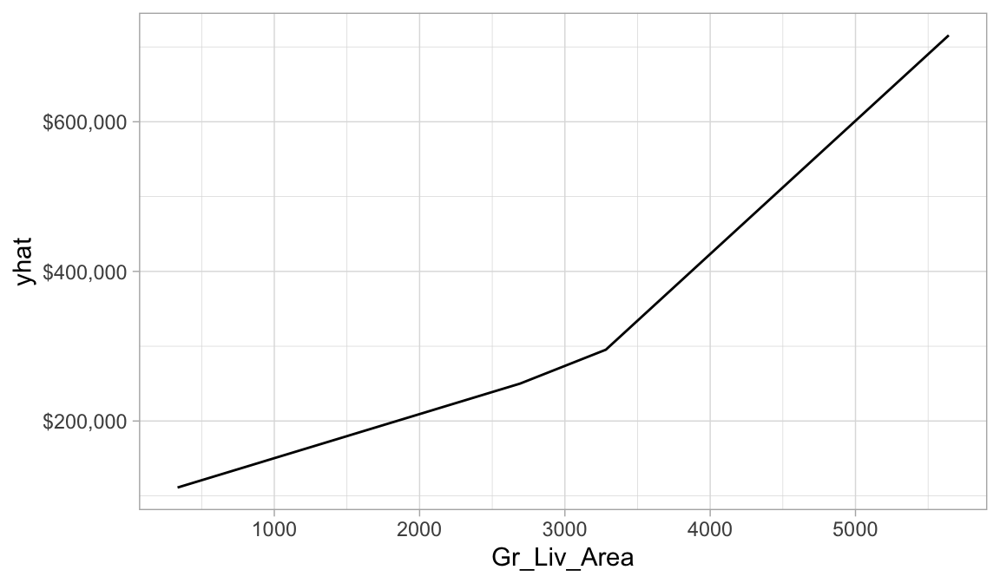

15 Lesson 5b: Multivariate Adaptive Regression Splines
The previous modules discussed algorithms that are intrinsically linear. Many of these models can be adapted to nonlinear patterns in the data by manually adding nonlinear model terms (e.g., squared terms, interaction effects, and other transformations of the original features); however, to do so you the analyst must know the specific nature of the nonlinearities and interactions a priori. Alternatively, there are numerous algorithms that are inherently nonlinear. When using these models, the exact form of the nonlinearity does not need to be known explicitly or specified prior to model training. Rather, these algorithms will search for, and discover, nonlinearities and interactions in the data that help maximize predictive accuracy.
This lesson discusses multivariate adaptive regression splines (MARS) (J. H. Friedman 1991), an algorithm that automatically creates a piecewise linear model which provides an intuitive stepping block into nonlinearity after grasping the concept of multiple linear regression. Future modules will focus on other nonlinear algorithms.
15.1 Learning objectives
By the end of this lesson you will know how:
- MARS models incorporates non-linear relationships with hinge functions (aka “knots”).
- How to train and tune MARS models using the Tidymodels construct.
- How to identify and visualize the most influential features in a MARS models.
15.2 Prerequisites
# Helper packages
library(tidyverse) # for data wrangling & plotting
# Modeling packages
library(tidymodels) # for fitting MARS models
# Model interpretability packages
library(vip) # for variable importance
library(pdp) # for variable relationships# Stratified sampling with the rsample package
set.seed(123)
ames <- AmesHousing::make_ames()
split <- rsample::initial_split(ames, prop = 0.7, strata = "Sale_Price")
ames_train <- rsample::training(split)
ames_test <- rsample::testing(split)15.3 Nonlinearity
In the previous modules, we focused on linear models (where the analyst has to explicitly specify any nonlinear relationships and interaction effects). We illustrated some of the advantages of linear models such as their ease and speed of computation and also the intuitive nature of interpreting their coefficients. However, linear models make a strong assumption about linearity, and this assumption is often a poor one, which can affect predictive accuracy.
We can extend linear models to capture any non-linear relationship. Typically, this is done by explicitly including polynomial terms (e.g., \(x_i^2\)) or step functions. Polynomial regression is a form of regression in which the relationship between \(X\) and \(Y\) is modeled as a \(d\)th degree polynomial in \(X\). For example, the following equation represents a polynomial regression function where \(Y\) is modeled as a \(d\)-th degree polynomial in \(X\). Generally speaking, it is unusual to use \(d\) greater than 3 or 4 as the larger \(d\) becomes, the easier the function fit becomes overly flexible and oddly shaped…especially near the boundaries of the range of \(X\) values. Increasing \(d\) also tends to increase the presence of multicollinearity.
\[\begin{equation} y_i = \beta_0 + \beta_1 x_i + \beta_2 x^2_i + \beta_3 x^3_i \dots + \beta_d x^d_i + \epsilon_i, \end{equation}\]
An alternative to polynomials is to use step functions. Whereas polynomial functions impose a global non-linear relationship, step functions break the range of \(X\) into bins, and fit a simple constant (e.g., the mean response) in each. This amounts to converting a continuous feature into an ordered categorical variable such that our linear regression function is converted to the following equation
\[\begin{equation} y_i = \beta_0 + \beta_1 C_1(x_i) + \beta_2 C_2(x_i) + \beta_3 C_3(x_i) \dots + \beta_d C_d(x_i) + \epsilon_i, \end{equation}\]
where \(C_1(x_i)\) represents \(x_i\) values ranging from \(c_1 \leq x_i < c_2\), \(C_2\left(x_i\right)\) represents \(x_i\) values ranging from \(c_2 \leq x_i < c_3\), \(\dots\), \(C_d\left(x_i\right)\) represents \(x_i\) values ranging from \(c_{d-1} \leq x_i < c_d\). The figure below contrasts linear, polynomial, and step function fits for non-linear, non-monotonic simulated data.

Figure 15.1: Blue line represents predicted (y) values as a function of x for alternative approaches to modeling explicit nonlinear regression patterns. (A) Traditional linear regression approach does not capture any nonlinearity unless the predictor or response is transformed (i.e. log transformation). (B) Degree-2 polynomial, (C) Degree-3 polynomial, (D) Step function cutting x into six categorical levels.
Although useful, the typical implementation of polynomial regression and step functions require the user to explicitly identify and incorporate which variables should have what specific degree of interaction or at what points of a variable \(X\) should cut points be made for the step functions. Considering many data sets today can easily contain 50, 100, or more features, this would require an enormous and unnecessary time commitment from an analyst to determine these explicit non-linear settings.
15.4 Multivariate adaptive regression splines
Multivariate adaptive regression splines (MARS) provide a convenient approach to capture the nonlinear relationships in the data by assessing cutpoints (knots) similar to step functions. The procedure assesses each data point for each predictor as a knot and creates a linear regression model with the candidate feature(s). For example, consider our non-linear, non-monotonic data above where \(Y = f\left(X\right)\). The MARS procedure will first look for the single point across the range of X values where two different linear relationships between Y and X achieve the smallest error (e.g., smallest SSE). What results is known as a hinge function \(h\left(x-a\right)\), where \(a\) is the cutpoint value. For a single knot (Figure (A)), our hinge function is \(h\left(\text{x}-1.183606\right)\) such that our two linear models for Y are
\[\begin{equation} \text{y} = \begin{cases} \beta_0 + \beta_1(1.183606 - \text{x}) & \text{x} < 1.183606, \\ \beta_0 + \beta_1(\text{x} - 1.183606) & \text{x} > 1.183606 \end{cases} \end{equation}\]
Once the first knot has been found, the search continues for a second knot which is found at \(x = 4.898114\) (plot B in figure below). This results in three linear models for y:
\[\begin{equation} \text{y} = \begin{cases} \beta_0 + \beta_1(1.183606 - \text{x}) & \text{x} < 1.183606, \\ \beta_0 + \beta_1(\text{x} - 1.183606) & \text{x} > 1.183606 \quad \& \quad \text{x} < 4.898114, \\ \beta_0 + \beta_1(4.898114 - \text{x}) & \text{x} > 4.898114 \end{cases} \end{equation}\]

Figure 15.2: Examples of fitted regression splines of one (A), two (B), three (C), and four (D) knots.
This procedure continues until many knots are found, producing a (potentially) highly non-linear prediction equation. Although including many knots may allow us to fit a really good relationship with our training data, it may not generalize very well to new, unseen data. Consequently, once the full set of knots has been identified, we can sequentially remove knots that do not contribute significantly to predictive accuracy. This process is known as “pruning” and we can use cross-validation, as we have with the previous models, to find the optimal number of knots.
15.5 Fitting a MARS model
15.5.1 Fitting a basic model
We’ll start by fitting a basic model using Gr_Liv_Area and Year_Built to predict our Sales_Price. In both R, the modeling algorithm will assess all potential knots across all supplied features and then will prune to the optimal number of knots based on an expected change in \(R^2\) (for the training data) of less than 0.001. This calculation is performed by the Generalized cross-validation (GCV) procedure, which is a computational shortcut for linear models that produces an approximate leave-one-out cross-validation error metric (Golub, Heath, and Wahba 1979).
Note that MARS models do not require normalization or standardization of numeric features.
In R, we use the parsnip::mars() function which provides a default setting of using the earth package, which is the most popular package for MARS functionality in R.
When you run the below code you may get an error that states:
This engine requires some package installs: ‘earth’. This
is because the engine that Tidymodels uses is the earth package. If you
get this error then install the earth package with
install.packages(“earth”) and rerun the code.
mars_fit <- mars(mode = "regression") %>%
fit(Sale_Price ~ Gr_Liv_Area + Year_Built, ames_train)
mars_fit
## parsnip model object
##
## Selected 9 of 10 terms, and 2 of 2 predictors
## Termination condition: RSq changed by less than 0.001 at 10 terms
## Importance: Gr_Liv_Area, Year_Built
## Number of terms at each degree of interaction: 1 8 (additive model)
## GCV 1802525892 RSS 3.632344e+12 GRSq 0.7208907 RSq 0.7252347In the results above, the GCV is reported along with other metrics (\(R^2\), residual sum of squares - RSS). We can use this info to compute the RMSE, which is in the low to mid $40K range. Keep in mind that this RMSE is not a cross-validated RMSE, just the RMSE on the training data (we’ll do some cross-validation shortly).
# RMSE
sqrt(mars_fit$fit$rss / nrow(ames_train))
## [1] 42103.92Looking at the coefficients below, you’ll notice that we see a knot in Gr_Liv_Area at 3395. This suggests that as homes exceed 3395 square feet there is a change in the linear relationship between Gr_Liv_Area and Sale_Price compared to homes that are less than 3395 square feet. In fact, we can see multiple knots across the range of Gr_Liv_Area and Year_Built. Our model has taken two features (Gr_Liv_Area and Year_Built) and split them into 8 features by creating knots along these feature values.
# coefficients
mars_fit$fit$coefficients
## Sale_Price
## (Intercept) 295628.31484
## h(Gr_Liv_Area-3395) -772.99460
## h(3395-Gr_Liv_Area) -61.66360
## h(2002-Year_Built) -685.97770
## h(Gr_Liv_Area-2169) 27.57111
## h(Gr_Liv_Area-3194) 516.04236
## h(Gr_Liv_Area-1456) 41.77324
## h(Year_Built-1977) 910.94873
## h(Year_Built-2004) 12519.67884The most important tuning parameter in a MARS model is the number of knots to use for a given feature. However, this is automatically baked into the algorithm so we get this tuning for free!
15.5.2 Fitting a full model
Next, lets go ahead and fit a full model to include all Ames housing features. As you’ll see in the results we experience significant improvement in the training RMSE (low $20K). However, recall that this is not a cross-validated RMSE, but rather the RMSE for the training data in which the model was fit. Consequently, this is likely an overfit model but we’ll perform a cross-validation approach in the next section to get a more accurate generalized RMSE.
MARS models are no different then other algorithms where we need to convert categorical features to numeric values. In R, the MARS modeling engine “earth” will automatically one-hot encode all categorical features. This leads to over 300 features in our dataset; however, when you look at the results you will see that only a fraction of these features are used in the trained model (note it says “29 of 308 predictors”). However, there will actually be more coefficients then the features used because of the knots. For example of the 29 features, 41 coefficients are developed since many of these features are used multiple times (i.e. h(Gr_Liv_Area-3194), h(3194-Gr_Liv_Area)).
We call this process of feature elimination and knot refinement as “pruning the knots”.
mars_fit <- mars(mode = "regression") %>%
fit(Sale_Price ~ ., ames_train)
mars_fit
## parsnip model object
##
## Selected 41 of 45 terms, and 29 of 308 predictors
## Termination condition: RSq changed by less than 0.001 at 45 terms
## Importance: Gr_Liv_Area, Year_Built, Total_Bsmt_SF, ...
## Number of terms at each degree of interaction: 1 40 (additive model)
## GCV 511589986 RSS 967008439675 GRSq 0.9207836 RSq 0.9268516
# RMSE
sqrt(mars_fit$fit$rss / nrow(ames_train))
## [1] 21724.22
# coefficients
mars_fit$fit$coefficients
## Sale_Price
## (Intercept) 2.275972e+05
## h(Gr_Liv_Area-3194) -2.879934e+02
## h(3194-Gr_Liv_Area) -5.861227e+01
## h(Year_Built-2002) 3.128137e+03
## h(2002-Year_Built) -4.506370e+02
## h(Total_Bsmt_SF-2223) -6.531310e+02
## h(2223-Total_Bsmt_SF) -2.903002e+01
## h(1656-Bsmt_Unf_SF) 2.152273e+01
## Overall_QualVery_Excellent 1.198770e+05
## Overall_QualExcellent 7.325741e+04
## Overall_QualVery_Good 3.065703e+04
## h(2-Kitchen_AbvGr) 2.199288e+04
## h(Second_Flr_SF-1427) 3.071810e+02
## h(Year_Remod_Add-1973) 3.198457e+02
## h(Lot_Area-6720) 4.956740e-01
## h(6720-Lot_Area) -3.972312e+00
## FunctionalTyp 1.642861e+04
## h(Bedroom_AbvGr-4) -1.304304e+04
## h(4-Bedroom_AbvGr) 3.044473e+03
## h(Garage_Cars-2) 1.351805e+04
## h(2-Garage_Cars) -5.099554e+03
## h(Total_Bsmt_SF-2136) 5.756167e+02
## NeighborhoodCrawford 2.015380e+04
## Overall_QualGood 1.167108e+04
## Condition_2PosN -1.164630e+05
## Overall_CondGood 3.000370e+04
## Overall_CondVery_Good 3.380410e+04
## Overall_CondAbove_Average 2.231569e+04
## h(Gr_Liv_Area-2898) 1.591394e+02
## NeighborhoodGreen_Hills 9.830591e+04
## Roof_MatlWdShngl 6.744107e+04
## h(Longitude--93.6572) -1.229288e+05
## h(-93.6572-Longitude) -1.570905e+05
## NeighborhoodStone_Brook 3.162134e+04
## Overall_CondExcellent 3.886202e+04
## Overall_CondAverage 1.480704e+04
## h(Total_Bsmt_SF-1295) 3.234334e+01
## NeighborhoodNorthridge 2.693805e+04
## h(Fireplaces-1) 6.808179e+03
## h(1-Fireplaces) -4.374554e+03
## NeighborhoodNorthridge_Heights 1.455416e+0415.5.3 Fitting a full model with interactions
In addition to pruning the number of knots, MARS models allow us to also assess potential interactions between different hinge functions. The following example illustrates by allowing second degree interactions. You can see that now our model includes interaction terms between a maximum of two hinge functions (e.g. in the results you see h(Year_Built-2002)*h(Gr_Liv_Area-2398) which represents an interaction effect for those houses built after 2002 and have more than 2,398 square feet of living space).
mars_fit <- mars(mode = "regression", prod_degree = 2) %>%
fit(Sale_Price ~ ., ames_train)
mars_fit
## parsnip model object
##
## Selected 45 of 50 terms, and 27 of 308 predictors
## Termination condition: RSq changed by less than 0.001 at 50 terms
## Importance: Gr_Liv_Area, Year_Built, Total_Bsmt_SF, ...
## Number of terms at each degree of interaction: 1 20 24
## GCV 420267019 RSS 7.70355e+11 GRSq 0.9349244 RSq 0.9417272
# coefficients
mars_fit$fit$coefficients
## Sale_Price
## (Intercept) 3.473694e+05
## h(Gr_Liv_Area-3194) 2.302940e+02
## h(3194-Gr_Liv_Area) -7.005261e+01
## h(Year_Built-2002) 5.242461e+03
## h(2002-Year_Built) -7.360079e+02
## h(Total_Bsmt_SF-2223) 1.181093e+02
## h(2223-Total_Bsmt_SF) -4.901140e+01
## h(Year_Built-2002)*h(Gr_Liv_Area-2398) 9.035037e+00
## h(Year_Built-2002)*h(2398-Gr_Liv_Area) -3.382639e+00
## h(Bsmt_Unf_SF-625)*h(3194-Gr_Liv_Area) -1.145129e-02
## h(625-Bsmt_Unf_SF)*h(3194-Gr_Liv_Area) 9.905591e-03
## h(2002-Year_Built)*h(Total_Bsmt_SF-912) -7.674355e-01
## h(2002-Year_Built)*h(912-Total_Bsmt_SF) 2.277350e-01
## Mas_Vnr_TypeStone*h(Gr_Liv_Area-3194) -5.876451e+02
## h(Bedroom_AbvGr-4) -9.649772e+03
## h(4-Bedroom_AbvGr) 5.208836e+03
## Overall_QualVery_Excellent 1.095179e+05
## Overall_QualExcellent -1.578730e+05
## Overall_QualVery_Good 3.794092e+04
## h(Lot_Area-6720) 3.325029e+00
## h(6720-Lot_Area) -4.188039e+00
## h(2002-Year_Built)*h(Year_Remod_Add-1971) 7.085099e+00
## NeighborhoodCrawford*h(2002-Year_Built) 3.213659e+02
## h(Lot_Area-6720)*h(Garage_Cars-3) -1.943527e+00
## h(Lot_Area-6720)*h(3-Garage_Cars) -1.237131e+00
## Overall_QualExcellent*FoundationPConc 2.295300e+05
## Overall_QualGood 1.940091e+04
## Overall_QualAbove_Average*h(2223-Total_Bsmt_SF) 6.438535e+00
## h(2002-Year_Built)*Sale_ConditionNormal 2.183528e+02
## h(Lot_Area-6720)*h(144-Screen_Porch) -1.051737e-02
## FunctionalTyp 1.481969e+04
## h(Kitchen_AbvGr-1) -1.802740e+04
## h(First_Flr_SF-2444) -7.656120e+01
## h(2444-First_Flr_SF) -7.045054e+00
## NeighborhoodStone_Brook*h(Year_Built-2002) 1.033983e+04
## Overall_CondGood*h(2002-Year_Built) 1.598754e+02
## h(Longitude--93.6563) -9.367281e+05
## h(-93.6563-Longitude) -9.165180e+05
## h(3194-Gr_Liv_Area)*h(Longitude--93.6559) 4.432167e+02
## h(3194-Gr_Liv_Area)*h(-93.6559-Longitude) 3.803470e+02
## FunctionalTyp*h(Garage_Area-542) 3.500866e+01
## NeighborhoodGreen_Hills*FunctionalTyp 9.112140e+04
## h(4-Bedroom_AbvGr)*h(Fireplaces-1) 5.820943e+03
## h(4-Bedroom_AbvGr)*h(1-Fireplaces) -2.482522e+03
## h(Bsmt_Unf_SF-1237)*h(4-Bedroom_AbvGr) -3.737860e+0115.5.4 Knowledge check
Using the boston.csv dataset:
-
Apply a MARS model where
cmedvis the response variable andrmandlstatare the two predictor variables.- What is the training data RSS for the final model?
- Assess the coefficients. How many hinges/knots are there? Can you interpret the coefficients?
-
Apply a MARS model that uses all possible predictor variables.
- What is the training data RSS for the final model?
- Assess the coefficients. How many hinges/knots are there? Can you interpret the coefficients?
-
Apply a MARS model that uses all possible predictor variables and
allows for two-way interactions.
- What is the training data RSS for the final model?
- Assess the coefficients. How many hinges/knots are there? Can you interpret the coefficients?
15.6 Tuning
There are two important tuning parameters associated with MARS models: the maximum degree of interactions and the number of terms retained in the final model. We need to perform a grid search to identify the optimal combination of these hyperparameters that minimize prediction error (the above pruning process was based only on an approximation of CV model performance on the training data rather than an exact k-fold CV process). As in the previous lesson, we’ll perform a CV grid search to identify the optimal hyperparameter mix. Below, we set up a grid that assesses different combinations of interaction complexity and the number of terms to retain in the final model.
Rarely is there any benefit in assessing greater than 3-rd degree interactions. Also, realize that tuning MARS models can become computationally intense. Its often beneficial to start with 10 evenly spaced values for the maximum terms and then you can always zoom in to a region once you find an approximate optimal solution.
In R, our hyperparameters are num_terms (number of terms retained in the model) and prod_degrees (maximum degree of interaction allowed). Note that in R we can use num_terms() and prod_degree() from the dials package to create a tuning grid. By default prod_degree() will use values of 1 and 2 (no interactions and 2 degree interactions).
Our results show that our top 5 performing models all include 2 degree interactions and between 37-49 total terms (“knots”).
# create MARS model object
mars_mod <- mars(mode = "regression", num_terms = tune(), prod_degree = tune())
# create k-fold cross validation object
set.seed(123)
folds <- vfold_cv(ames_train, v = 5)
# create our model recipe
model_recipe <- recipe(Sale_Price ~ ., data = ames_train)
# create a hyper parameter tuning grid
hyper_grid <- grid_regular(
num_terms(range = c(1, 100)),
prod_degree(),
levels = 50
)
# train our model across the hyper parameter grid
results <- tune_grid(mars_mod, model_recipe, resamples = folds, grid = hyper_grid)
# get best results
show_best(results, metric = "rmse")
## # A tibble: 5 × 8
## num_terms prod_de…¹ .metric .esti…² mean n std_err .config
## <int> <int> <chr> <chr> <dbl> <int> <dbl> <chr>
## 1 37 2 rmse standa… 26546. 5 2969. Prepro…
## 2 43 2 rmse standa… 26701. 5 2617. Prepro…
## 3 45 2 rmse standa… 26702. 5 2618. Prepro…
## 4 47 2 rmse standa… 26702. 5 2618. Prepro…
## 5 49 2 rmse standa… 26702. 5 2618. Prepro…
## # … with abbreviated variable names ¹prod_degree, ².estimatorautoplot(results)
15.6.1 Knowledge check
Using the boston.csv dataset apply a MARS model that
uses all possible predictor variables and tune for the number of terms
and interactions.
- Use a 5-fold cross validation procedure to tune your model.
-
For number of terms used (
num_terms) assess values between 1-50. -
For possible interaction degrees use the default
prod_degree(). -
Assess a total of 10 values from each parameter
(
levels = 10).
Which model(s) provide the lowest cross validated RMSE? What hyperparameter values provide these optimal results?
15.7 Feature interpretation
MARS models use a backwards elimination feature selection routine that looks at reductions in the GCV estimate of error as each predictor is added to the model. This total reduction can be used as the variable importance measure ("gcv"). Since MARS will automatically include and exclude terms during the pruning process, it essentially performs automated feature selection. If a predictor was never used in any of the MARS basis functions in the final model (after pruning), it has an importance value of zero. Alternatively, you can also monitor the change in the residual sums of squares (RSS) as terms are added ("rss"); however, you will often see very little difference between these methods. The following examples extract the feature importance values based on RSS.
The below shows that our most influential feature Gr_Liv_Area followed by Year_Built, Total_Bsmt_SF, Overall_QualExcellent, etc.
best_hyperparameters <- select_best(results, metric = "rmse")
final_wf <- workflow() %>%
add_model(mars_mod) %>%
add_formula(Sale_Price ~ .) %>%
finalize_workflow(best_hyperparameters)
# plot top 20 influential variables
final_wf %>%
fit(data = ames_train) %>%
extract_fit_parsnip() %>%
vip(20, type = "rss")
Since our relationship between our response variable and the predictor variables are now non-linear, it becomes helpful to visualize the relationship between the most influential feature(s) and the response variable to see how they relate. We can do that with partial dependence plots (PDPs). PDPs plot the change in the average predicted value of our model (\(\hat y\)) as specified feature(s) vary over their marginal distribution.
We can then use the pdp package to extract the partial dependence values in order to plot the relationship between predicted Sale_Price and Gr_Liv_Area. Don’t get too hung up in the code here. But you can see that based on our PDP, as homes exceed 3,200ish square feet we see a steepening increase in the relationship.
# prediction function
pdp_pred_fun <- function(object, newdata) {
mean(predict(object, newdata, type = "numeric")$.pred)
}
# use the pdp package to extract partial dependence predictions
# and then plot
final_wf %>%
fit(data = ames_train) %>%
pdp::partial(
pred.var = "Gr_Liv_Area",
pred.fun = pdp_pred_fun,
grid.resolution = 10,
train = ames_train
) %>%
ggplot(aes(Gr_Liv_Area, yhat)) +
geom_line() +
scale_y_continuous(labels = scales::dollar)
15.8 Final thoughts
There are several advantages to MARS. First, MARS naturally handles mixed types of predictors (quantitative and qualitative). MARS considers all possible binary partitions of the categories for a qualitative predictor into two groups.5 Each group then generates a pair of piecewise indicator functions for the two categories. MARS also requires minimal feature engineering (e.g., feature scaling) and performs automated feature selection. For example, since MARS scans each predictor to identify a split that improves predictive accuracy, non-informative features will not be chosen. Furthermore, highly correlated predictors do not impede predictive accuracy as much as they do with OLS models.
However, one disadvantage to MARS models is that they’re typically slower to train. Since the algorithm scans each value of each predictor for potential cutpoints, computational performance can suffer as both \(n\) and \(p\) increase. Also, although correlated predictors do not necessarily impede model performance, they can make model interpretation difficult. When two features are nearly perfectly correlated, the algorithm will essentially select the first one it happens to come across when scanning the features. Then, since it randomly selected one, the correlated feature will likely not be included as it adds no additional explanatory power.
15.9 Exercises
Using the same kernlab::spam data we saw in the section
12.10…
- Split the data into 70-30 training-test sets.
-
Apply a MARS classification model where
typeis our response variable and use all possible predictor variables.- Use a 5-fold cross-validation procedure.
-
Tune number of terms used (
num_terms) with values ranging 1-100. -
Tune number of interaction degrees with the default
prod_degree()values. -
Assess a total of 50 values from each parameter
(
levels = 50).
-
Which model(s) have the highest AUC (
roc_auc) scores? - What hyperparameter values provide these optimal results?
- Use the hyperparameter values that provide the best results to finalize your workflow and and identify the top 20 most influential predictors.
- Bonus: See if you can create a PDP plot for the #1 most influential variable. What does the relationship between this feature and the response variable look like?
References
This is very similar to CART-like decision trees which you’ll be exposed to in a later module.↩︎